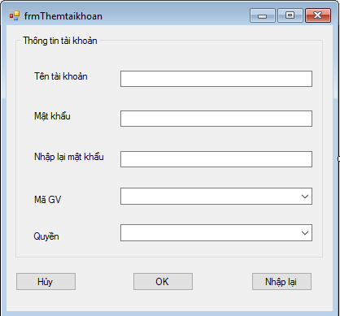

Hướng dẫn sử dụng phần mềm quản lí giáo viên học sinh
1.Đầu tiên,các bạn phải kết nối cơ dở dữ liệu SQL trong máy.Khi kết nối thành công các bạn đã đk kết nối SQL với visual studio để làm dự án.

2.Sau khi các ban kết nối thành công,các bạn phải đăng nhập bằng tài khoản đã được cấp phát từ trước để dăng nhập vào dự án.
Đăng Nhập Thành Công

2.Sau khi các ban đăng nhập thành công,màn hình chính xuất hiện, có 4 modul cơ bản của hệ thống:học sinh, giáo viên,đăng ký giảng dạy và tài khoản.
Tại đó,người dùng có thể ấn vào các nút tùy theo mục đích sử dụng.

3.Khi ấn vào Modul Quản lý học sinh,có 6 chức năng chính:
Tại đó,người dùng có thể ấn vào các nút tùy theo mục đích sử dụng.
- -Thêm học sinh
- -Thay đổi thông tin
- -Xóa học sinh
- -Tìm kiếm học sinh
- -Lưu
- -Thêm mới

4.Khi ấn vào Modul Quản lý giáo viên,có 6 chức năng chính:
Tại đó,người dùng có thể ấn vào các nút tùy theo mục đích sử dụng.
- -Thêm giáo viên
- -Sửa thông tin giáo viên
- -Xóa giáo viên
- -Tìm kiếm giáo viên
- -Lưu
- -Thêm mới

5.Khi ấn vào Modul Đăng ký giảng dậy,có chức năng chính:
Tại đó,người dùng có thể ấn vào các nút tùy theo mục đích sử dụng.
- -Thêm giờ giảng cho giáo viên
- -Sửa lịch giảng
- -Xóa lịch giảng
6.Khi ấn vào Modul Thời khóa biểu,có các chức năng chính:
Tại đó,người dùng có thể ấn vào các nút tùy theo mục đích sử dụng.
- -Xem thời khóa biểu
- -Đăng ký thêm lịch giảng

7.Khi ấn vào Modul Quản lý tài khoản,có các chức năng chính:
Tại đó,người dùng có thể ấn vào các nút tùy theo mục đích sử dụng.
- -Thêm tài khoản
- -Thay đổi thông tin
- -Xóa tài khoản

Ở đây,các bạn có thể thêm tài khoản mới,thay đổi thông tin hoặc xóa tài khoản.
